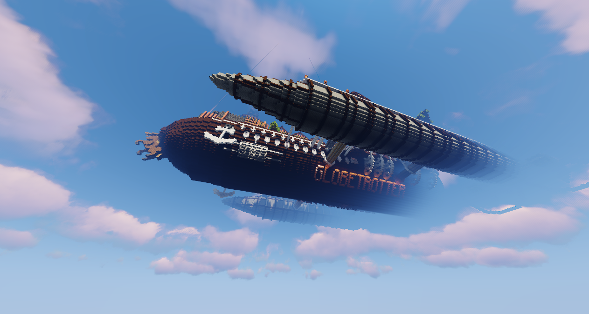

Summer of Eden 2025
Golem_Leader - July 3rd, 2025
Hello, Edenites! It's been a while!
As I'm sure it's been made well aware of at this point, the server had a corruption issue brought forth by the previous host switching things around in the backend without warning. As such, there have been some significant changes:
- The Survival world is essentially gone. We've created a new one to fill that gap.
- Airships, in turn, are also gone. If you are Sky Pilot or above, contact a staff member, and we'll get you a replacement.
- Inventories (should be) correct, but some may experience losses as well.
- Ranks may be incorrect.
What does this all mean?
First of all, we know this can be demotivating. In fact, we've spent a collective of 100+ hours trying to get everything back to a workable state on our side, as we lost a lot, too. That said, we have plans in place to get everyone back into the swing of things, if not in a perfect way.
1. You can now do /rewards revival to receive a Creative World Port coupon, which you can use to rebuild your house and have a staff member port it over. There's no time limit on redeeming this, so even if you decide you want to rebuild your house in survival, you can have something else ported. Also included are some other items to help kickstart your return to Eden.
2. All users will have temporary access to the Creative world to assist with this process.
3. A new Bubble Halo trail will be added as consolation.
4. We will be having a drop party (with a lot more goodies than usual) on a weekend after launch. This will likely include some runes (remember, if you get a rune coupon, you can use /runeitem while holding a runeable item in your hand.)
5. Any users who lost items or rank, let a staff member know, and we will provide as needed. For any who lost VIP ranks/perks, proof will need to be provided.
6. A new event!
Would it really be a Sky Eden return without an event to come with it? I say no. Therefore, we have a new event underway...
Summer of Eden 2025: Heist!
Many older Edenites may remember the spawn ship, a large ship floating over the center of the world. For a while, it was stationed above Bracketburgh as well, but left to be decommissioned. Now, with a new captain and mayor, the ship has returned!
There's just one problem: Mayor Del, in anticipation of the reopening of the Globetrotter on her new maiden voyage, has discovered that the ceremonial scissors for cutting the ceremonial rope have been unceremoniously stolen. She needs you to help her find the scissors. What's in it for you? Rune coupons and a new custom weapon, of course!
The Heist event, as well as the reopening of the server, will begin on July 20th, 2025. The drop party will likely occur the weekend after that, unless there's a large enough amount of staff available the weekend of. From there, we have plenty more planned to wrap up the summer, so stay tuned and reimmerse yourself in the world of Sky Eden!
I look forward to seeing you here!
Golem_Leader, owner
WHAT'S NEW:
- Trails have returned, with all new trail types! These can be found at skyeden.org/donations.
- New (Eden-Made) runes! The list isn't finalized, but there's a potential of 14 new ones to the roster, including some old favorites.
- Armored Elytra now uses a smithing table instead of an anvil.
- New Brews have been added to the brewery list.
- Cannons are back, and new cannons can be created/configured.
- Auctions have returned (/ah), with a new formatting.
- Furniture has returned to the Sky Pilot rank.
- /heads for those with the VIP Perk now has better functionality.
- Goat horn cannons now function better.
- Egging now functions as intended again (except for cows...) and works on the first attempt.
- Those with the ability to toggle Redstone Lamps can now do so with Copper Bulbs.
- Rainbow Armor has now returned to those with the perk.
- Disco Floor is still in the process of returning.
- Drop Parties are now hosted at /warp party.
- Voting is once again broken, we're getting there.
- SkyWwars is once again broken, we're getting there.
- Copper blocks can now be used as elevators.
- The Sky Eden book is fully functional.
- The rail system has been revamped, and has been placed before your houses were this time.
- Western_Wolf is now a moderator.
- Western_Wolf is now a vampire.
- The map has been mostly preloaded, allowing you to find the biome you want.
- Custom hats, are no longer pumpkins, meaning there's no worry of accidentally placing them.
- Added a new Custom Item Model coupon! These can be gotten as a donation item, or rarely given by staff!
- We are working towards having MoveCraft exist in some capacity, but there is still more to be tested on our end.
- Floating islands can once again be found around the map, with a few special types included!
- Removed Herobrine
